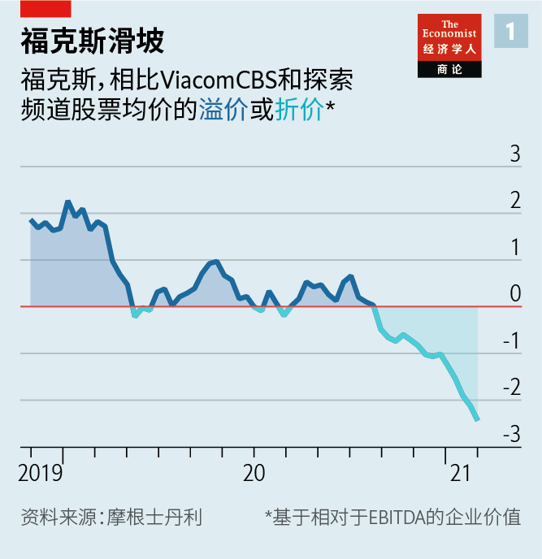

2021-03-25T13:07:53+00:00
默多克九十岁
下一场大戏
当最后的媒体大亨准备移交他的帝国时，投资者和子女已经准备好为帝国的未来而战

疫情期间的生日派对很沉闷，即使是亿万富翁也一样。但鲁珀特·默多克（Rupert Murdoch）在3月11日庆祝90大寿的时候至少应该比他80大寿那天压力要小。当时，英国警方正深入调查他的新闻集团（News Corporation，当时是世界第四大媒体公司）旗下的一家子公司，寻找其新闻记者窃听电话并贿赂警察的证据。多人被定罪，已有168年历史的《世界新闻报》（News of the World）关闭，之后默多克被迫出席英国议会的听证会，他说那是“我一生中最卑微的一天”。
在他的帝国濒临崩溃的十年后，对这位澳大利亚出生的大亨来说，情况正变得越来越好。电话窃听丑闻已经平息。他最珍贵的资产在市场高位时卖给了迪士尼。福克斯新闻频道（Fox News）是美国最受欢迎（也可以说是最受鄙视）的有线电视频道。默多克在上个月取得了一次出其不意的成功，迫使科技巨头为他的新闻链接内容付费。“他有钱。他有巨大的政治影响力。他有一切。”资深媒体观察家克莱尔·恩德斯（Claire Enders）说。
在他准备把这一切交出来时，前方却笼罩着一层阴云。有线电视的衰落正在加速。一宗迫在眉睫的官司可能比电话窃听案付出的代价还要高。而继任问题仍然悬而未决，这延续数十年的传奇故事被竞争对手HBO隔岸观火地演绎成了剧集。默多克仍然是把一个强大的商业和政治工程凝聚起来的力量。离开他，这帝国可能难以保全。
电话窃听事件的丢脸经历最终却因祸得福。默多克被迫将新闻集团一分为二，将利润丰厚的影视资产归入21世纪福克斯（21st Century Fox）这家分析师口中的“好公司”（Good Co）。受丑闻打击的报纸业务被隔离在新闻集团之中——被叫作“烂公司”（Crap Co）。随着公司逐渐现代化，权力逐步移交给默多克的儿子拉克兰（Lachlan）和詹姆斯（James），投资者又回来了。2019年，默多克跨出了最大胆的一步，这位媒体业大整合家意识到是时候从猎人变为猎物了，他以710亿美元的价格将21世纪福克斯的影视业务的大部分出售给了迪士尼。根据恩德斯和同事的计算，自2011年以来，默多克家族信托的持股已升值了六倍多，该信托在两家公司都拥有近40％的表决权股份。
下一个章节会更加棘手。先来说两家中规模更大的、市值达240亿美元的福克斯公司。疫情加速了美国有线电视已持续十年的衰落。去年有线电视用户减少了7.3％，至近30年未见的低水平。福克斯上一财年的营业利润总额为28亿美元，它还未受到这一趋势的影响，因为它所专注的新闻和体育赛事尚未被流媒体公司争抢。但有些事情已经发生了变化。福克斯之前的股价对ViacomCBS和探索频道（Discovery）这两家有线电视竞争对手存在溢价，而现在却为近30％的折价（见图表1）。
原因之一是流媒体们冲着体育节目来了。亚马逊已经在转播职业橄榄球大联盟（National Football League，NFL）的赛事，据说还在洽谈一些美国橄榄球比赛的独播权。各大体育联盟都希望吸引年轻的体育迷，但依靠有线电视做不到，因为它们三分之二的观众都超过50岁。因此，有线电视公司正在把体育节目转移到自己的流媒体服务上。迪士尼有ESPN+；康卡斯特（Comcast）1月宣布将关闭其NBC体育频道，把节目转到它的孔雀（Peacock）平台上。媒体分析师迈克尔·纳桑森（Michael Nathanson）指出，没有为体育赛事搭建流媒体平台的福克斯成了“异类”。
去年贡献了福克斯总收入约80％的福克斯新闻频道遭遇了另一种问题。它与特朗普任内的白宫关系密切，这让它的收视率创下纪录，但让广告主和一些投资者望而却步。“你投资任何一家公司，都希望它的行为符合道德规范。”一位大股东说。福克斯“现在处于灰色地带。它仍然可以自我辩护，但远不如从前有力了。”选举软件公司Smartmatic正状告福克斯荒唐宣扬它操纵大选，索赔27亿美元。（福克斯表示将把这场“毫无理据”的官司打下去。）这笔赔偿金将超过为电话窃听案支付的金额。
福克斯已经收敛了对特朗普的支持，结果观众却转向了Newsmax和One America News这样的右翼新贵。福克斯新闻仍是黄金时段收视率最高的有线电视频道，但2月的收视率同比下降了30％，而其竞争对手CNN和MSNBC的收视率分别上升了61％和23％。福克斯的一位前高管表示，就像特朗普的共和党一样，福克斯新闻频道也深陷“全力满足”超级保守派的少数观众不能自拔。现在，它有可能失去这一观众群，而又无法吸引到没那么古怪的受众。
有点讽刺的是，“烂公司”目前的财务状况要更好一些。美国、英国和澳大利亚的报纸业务是其收入的大头，其次是澳大利亚的付费电视和哈珀柯林斯出版集团（HarperCollins）（见图表2）。但是，它的一大新利润来源是它在两家线上房地产广告公司REA Group和Move持有的多数股权。新闻集团的股价已较去年4月的低点增加了近两倍，这在很大程度上要归功于REA股价的大涨。
和福克斯一样，这些报纸同样必须应对广告向线上转移的全球趋势。最大的媒体受众购买商群邑（GroupM）的布莱恩·维瑟（Brian Wieser）说，十年前，默多克的各家公司合起来是全球第三大广告销售商。现在，它们已经掉出前十名。但与福克斯相比，报纸在数字化转型方面走得更远。《华尔街日报》的在线订阅量占总订阅量的四分之三；即使是长期亏损的小报《纽约邮报》（New York Post）在2020年最后一个季度也实现了微弱盈利。根据与谷歌达成的一项最新协议，这个科技巨头将向新闻集团支付内容费用，这缘于澳大利亚政府通过的一项相关法律，新闻集团旗下的报纸对这项立法表示了支持。“内容交易的规则正在发生根本变化。”新闻集团首席执行官罗伯特·汤姆森（Robert Thomson）在3月4日表示。
尽管如此，新闻集团不到150亿美元的市值仍然低于它各式业务价值的总和。汤姆森坚持认为，新闻集团正在经历“简化过程”，它已经出售了在线教育业务Amplify和视频广告平台Unruly等资产。许多分析师认为，它应该进一步将新闻业务与房地产业务分开。目前，寻求增长的投资者被它的房地产资产所吸引，却又因为它传统的新闻品牌却步，而寻求价值的投资者看重报纸，对房地产不感兴趣。
有些人还认为应该拆解福克斯。纳桑森认为，福克斯应该出售被市场低估的无线电视资产和体育频道。恩德斯认为，甚至可以把福克斯新闻频道也剥离出来，如果能找到买家的话——这个品牌太具争议性，基本上卖不出去。投资银行摩根士丹利估计，充分利用杠杆收购福克斯可能会在五年内获得约25％的年化投资回报。
要调整两家公司中任一的业务组合，最大障碍可能是默多克本人。等到最终交接权力时，“将会很快上演一场分家故事。”券商晨星（Morningstar）的布莱恩·汉（Brian Han）认为。下一代会愿意拆分帝国吗？由谁来做主呢？
谁接任无冕之王
拉克兰已被任命为福克斯的首席执行官和新闻集团的联席董事长。他在福克斯收购了依赖广告的流媒体服务Tubi、几家体育博彩公司和信用评分机构Credible Labs。无一明显契合核心新闻业务。内部人士认为，他不会愿意削减既有资产。特别是在澳大利亚，“（拉克兰）深感在那里有很多难以割舍的历史渊源”，一位新闻集团前高管表示。“它难以叫人头脑清醒。”一位颇有微词的股东认为，满脑子幻想的拉克兰希望通过收购来建立家族帝国。他对拉克兰一两年前在洛杉矶以创下该市纪录的高价购置豪宅也大为不满。
无论拉克兰有什么目标，可能都无法如愿以偿。默多克去世后，家族信托的控制权将转移给他四个最大的孩子。詹姆斯去年辞去了新闻集团的董事职务，现在与父亲和拉克兰割席，他已明确表态不支持公司的右翼编辑方针，而且似乎并不留恋家族生意。伊丽莎白在媒体上警告了“无使命盈利”的危险。再加上较为低调的同父异母的姐姐普鲁登斯（Prudence），他们可以让两家公司都改弦易辙。
如果这些公司的未来不仅由商业逻辑决定，也由家庭政治决定，那倒恰恰呼应了它们自身的特性。因为它们运营的资产所具有的政治功能不亚于经济功能。默多克帝国的目标一直都是赚钱兼发挥影响力。“福克斯新闻频道有何用？”一位前高管问到，“煽动叛乱。”福克斯和新闻集团自己倒可能要面对一场叛乱了。
2021-03-25T13:07:53+00:00
Rupert Murdoch at 90
Next up
As the last great media mogul prepares to hand over his empire, investors and offspring get ready for a battle over its future

BIRTHDAY PARTIES in pandemics are dreary, even for billionaires. But Rupert Murdoch’s 90th, which he celebrated on March 11th, should at least have been less stressful than his 80th. Back then British detectives were burrowing into a subsidiary of his firm, News Corporation, then the world’s fourth-largest media company, for evidence that its journalists had hacked phones and bribed police. Several convictions later, and after the closure of the 168-year-old
A decade on from the near-collapse of his empire, things are going rather better for the Australian-born tycoon. The phone-hacking scandal has receded. The choicest assets in his collection have been sold to Disney at the top of the market. Fox News is America’s most popular (if also its most despised) cable channel. And in a coup last month, Mr Murdoch forced tech giants to pay for linking to his content. “He has the money. He has huge amounts of political power. He has it all,” says Claire Enders, a veteran media-watcher.
As he prepares to pass it all on, the outlook is clouding over. Cable television is in hastening decline. A looming legal problem could prove even costlier than the phone-hacking affair. And the succession question—a decades-long saga which HBO, a rival network, cheekily dramatised—lingers on. Mr Murdoch is still the force that holds together a formidable commercial and political project. It may not stay intact without him.
The humbling experience of the phone-hacking affair turned out to be a blessing. It forced Mr Murdoch to split News Corporation in two, putting the lucrative TV and film assets into 21st Century Fox (which analysts nicknamed “Good Co”). The scandal-hit newspapers were quarantined in News Corp (dubbed “Crap Co”). As the firms were modernised and power devolved to Mr Murdoch’s sons, Lachlan and James, investors returned. In his boldest move, in 2019, the great consolidator of the media business realised that it was time to become prey rather than predator, and sold most of the 21st Century film and TV business to Disney for $71bn. Ms Enders and colleagues calculate that since 2011 the holdings of the Murdoch family trust, which has nearly 40% of the voting shares in each company, have appreciated more than sixfold.
The next chapter will be trickier. Start with Fox, the larger company, with a market capitalisation of $24bn. The pandemic has speeded the decade-long decline of American cable TV. Last year cable subscriptions fell by 7.3%, to levels not seen in nearly 30 years. Fox, whose gross operating profit in the last financial year was $2.8bn, has been insulated from this trend by its focus on news and sport, which streaming companies have yet to snatch. But something has changed. Whereas Fox used to trade at a premium to ViacomCBS and Discovery, two cable rivals, it now trades at a nearly 30% discount (see chart 1).
One reason is that the streamers are coming for sport. Amazon already covers the National Football League and is said to be seeking exclusive rights to some American-football games. Leagues want to reach young fans, and cannot get them on cable TV, where two-thirds of viewers are over 50. So cable companies are moving sport onto their own streaming services. Disney has ESPN+; Comcast announced in January that it would shut down its NBC Sports Network and shift programming to its Peacock service. Michael Nathanson, a media analyst, notes that without a streaming platform for sports, Fox is “the odd man out”.
Fox News, where Fox made about 80% of its money last year, has problems of a different sort. Its close relationship with Donald Trump’s White House generated record ratings, but alienated advertisers and some investors. “Any company you hold, you want to see behave ethically,” says one large shareholder. Fox is “in that grey area right now. It’s defensible, but it’s far less defensible than it was.” Smartmatic, an election-software company, is suing the company for $2.7bn for airing ludicrous claims that it rigged the presidential election. (Fox says it will fight the “meritless” lawsuit.) That sum would exceed the phone-hacking payouts.
Fox has reined in its support for Mr Trump, only to see viewers depart for right-wing upstarts like Newsmax and One America News. Fox News remains the most-watched cable channel in primetime. But viewership in February was down by 30%, year on year, even as that of its rivals, CNN and MSNBC, rose by 61% and 23%, respectively. One former Fox executive observes that, like Mr Trump’s Republican Party, Fox News was trapped into “super-serving” an ultra-conservative minority of its audience. Now it risks losing it, without attracting less kooky viewers.
Ironically, “Crap Co” is having a better time. Newspapers in America, Britain and Australia provide the largest chunk of its revenue, followed by Australian pay-TV and HarperCollins publishing (see chart 2). But a big new contributor to profits is its majority stake in REA Group and in Move, two online property advertising companies. News Corp’s share price has nearly trebled from its trough last April, thanks in large part to a surge in REA’s shares.
Like Fox, the newspapers have had to deal with a global shift of advertising online. Ten years ago the Murdoch companies were collectively the world’s third-largest seller of ads, says Brian Wieser of GroupM, the biggest media-buyer. Now they are outside the top ten. But the newspapers are further along the digital transition than Fox is. Online subscriptions account for three-quarters of the total at the
Still, with a market capitalisation of less than $15bn, News Corp is worth less than the sum of its eclectic parts. Mr Thomson insists it is on a “course of simplification”, having sold assets such as Amplify, an online education business, and Unruly, a video-ad platform. Many analysts think it should go further and separate the news businesses from the real-estate ones. At the moment, investors seeking growth are attracted by the property portfolio but put off by the legacy news brands, whereas investors looking for value like the newspapers but not the real estate.
Some also see a case for breaking up Fox. Mr Nathanson has argued that the firm should sell its broadcast-TV assets and sports channels, which the market seems to undervalue. Perhaps even Fox News could be spun off, if a buyer could be found: the brand is so controversial that it is all but unsellable, Ms Enders believes. A full leveraged buy-out of Fox could generate an annualised return on investment of roughly 25% over five years, calculates Morgan Stanley, an investment bank.
The biggest impediment to restructuring either firm’s portfolio may be Mr Murdoch himself. When power is eventually handed down, “a break-up story will gain momentum,” believes Brian Han of Morningstar, a broker. Will the next generation be willing to carve the empire up? And which of them will call the shots?
The son wot won it
Lachlan is already installed as chief executive of Fox and co-chairman of News Corp. At Fox he has backed Tubi, an ad-supported streaming service, sports-betting ventures and Credible Labs, a credit-scoring agency. None is an obvious fit with the core news business. Insiders think he would be reluctant to trim the legacy assets. Particularly in Australia, “there is a lot of history that [Lachlan] feels very deeply part of”, says a former News Corp executive. “It doesn’t lend itself to clear-headedness.” Lachlan has “stars in his eyes” and wants to build the family empire back up through acquisitions, believes one disapproving shareholder (who also fumes at Lachlan’s recent purchase of the most expensive house in Los Angeles).
Whatever he wants, Lachlan may not get his way. On Rupert’s death, control of the family trust will pass to his four eldest children. James, who resigned from the board of News Corp last year and now has little to do with his father and brother, has made clear his disapproval of the companies’ right-wing editorial line and does not seem attached to the legacy businesses. Elisabeth has warned of the dangers of “profit without purpose” in the media. With their elder half-sister Prudence, who keeps a lower profile, they could alter the course of both businesses.
If the future of the firms is determined not just by commercial logic but by family politics, that would be fitting. The assets in play are political as much as they are economic. The purpose of the Murdoch empire has always been to wield power as well as to make money. “What is Fox News for?” asks a former executive. “Fomenting insurrection.” Both Fox and News Corp may yet face one themselves. ■
2021-03-25T13:07:53+00:00
默多克九十歲
下一場大戲
當最後的媒體大亨準備移交他的帝國時，投資者和子女已經準備好為帝國的未來而戰
疫情期間的生日派對很沉悶，即使是億萬富翁也一樣。但魯珀特·默多克（Rupert Murdoch）在3月11日慶祝90大壽的時候至少應該比他80大壽那天壓力要小。當時，英國警方正深入調查他的新聞集團（News Corporation，當時是世界第四大媒體公司）旗下的一家子公司，尋找其新聞記者竊聽電話並賄賂警察的證據。多人被定罪，已有168年歷史的《世界新聞報》（News of the World）關閉，之後默多克被迫出席英國議會的聽證會，他說那是“我一生中最卑微的一天”。
在他的帝國瀕臨崩潰的十年後，對這位澳大利亞出生的大亨來說，情況正變得越來越好。電話竊聽醜聞已經平息。他最珍貴的資產在市場高位時賣給了迪士尼。福克斯新聞頻道（Fox News）是美國最受歡迎（也可以說是最受鄙視）的有線電視頻道。默多克在上個月取得了一次出其不意的成功，迫使科技巨頭為他的新聞鏈接內容付費。“他有錢。他有巨大的政治影響力。他有一切。”資深媒體觀察家克萊爾·恩德斯（Claire Enders）說。
在他準備把這一切交出來時，前方卻籠罩着一層陰雲。有線電視的衰落正在加速。一宗迫在眉睫的官司可能比電話竊聽案付出的代價還要高。而繼任問題仍然懸而未決，這延續數十年的傳奇故事被競爭對手HBO隔岸觀火地演繹成了劇集。默多克仍然是把一個強大的商業和政治工程凝聚起來的力量。離開他，這帝國可能難以保全。
電話竊聽事件的丟臉經歷最終卻因禍得福。默多克被迫將新聞集團一分為二，將利潤豐厚的影視資產歸入21世紀福克斯（21st Century Fox）這家分析師口中的“好公司”（Good Co）。受醜聞打擊的報紙業務被隔離在新聞集團之中——被叫作“爛公司”（Crap Co）。隨着公司逐漸現代化，權力逐步移交給默多克的兒子拉克蘭（Lachlan）和詹姆斯（James），投資者又回來了。2019年，默多克跨出了最大膽的一步，這位媒體業大整合家意識到是時候從獵人變為獵物了，他以710億美元的價格將21世紀福克斯的影視業務的大部分出售給了迪士尼。根據恩德斯和同事的計算，自2011年以來，默多克家族信託的持股已升值了六倍多，該信託在兩家公司都擁有近40％的表決權股份。
下一個章節會更加棘手。先來說兩家中規模更大的、市值達240億美元的福克斯公司。疫情加速了美國有線電視已持續十年的衰落。去年有線電視用戶減少了7.3％，至近30年未見的低水平。福克斯上一財年的營業利潤總額為28億美元，它還未受到這一趨勢的影響，因為它所專註的新聞和體育賽事尚未被流媒體公司爭搶。但有些事情已經發生了變化。福克斯之前的股價對ViacomCBS和探索頻道（Discovery）這兩家有線電視競爭對手存在溢價，而現在卻為近30％的折價（見圖表1）。
原因之一是流媒體們衝著體育節目來了。亞馬遜已經在轉播職業橄欖球大聯盟（National Football League，NFL）的賽事，據說還在洽談一些美國橄欖球比賽的獨播權。各大體育聯盟都希望吸引年輕的體育迷，但依靠有線電視做不到，因為它們三分之二的觀眾都超過50歲。因此，有線電視公司正在把體育節目轉移到自己的流媒體服務上。迪士尼有ESPN+；康卡斯特（Comcast）1月宣布將關閉其NBC體育頻道，把節目轉到它的孔雀（Peacock）平台上。媒體分析師邁克爾·納桑森（Michael Nathanson）指出，沒有為體育賽事搭建流媒體平台的福克斯成了“異類”。
去年貢獻了福克斯總收入約80％的福克斯新聞頻道遭遇了另一種問題。它與特朗普任內的白宮關係密切，這讓它的收視率創下紀錄，但讓廣告主和一些投資者望而卻步。“你投資任何一家公司，都希望它的行為符合道德規範。”一位大股東說。福克斯“現在處於灰色地帶。它仍然可以自我辯護，但遠不如從前有力了。”選舉軟件公司Smartmatic正狀告福克斯荒唐宣揚它操縱大選，索賠27億美元。（福克斯表示將把這場“毫無理據”的官司打下去。）這筆賠償金將超過為電話竊聽案支付的金額。
福克斯已經收斂了對特朗普的支持，結果觀眾卻轉向了Newsmax和One America News這樣的右翼新貴。福克斯新聞仍是黃金時段收視率最高的有線電視頻道，但2月的收視率同比下降了30％，而其競爭對手CNN和MSNBC的收視率分別上升了61％和23％。福克斯的一位前高管表示，就像特朗普的共和黨一樣，福克斯新聞頻道也深陷“全力滿足”超級保守派的少數觀眾不能自拔。現在，它有可能失去這一觀眾群，而又無法吸引到沒那麼古怪的受眾。
有點諷刺的是，“爛公司”目前的財務狀況要更好一些。美國、英國和澳大利亞的報紙業務是其收入的大頭，其次是澳大利亞的付費電視和哈珀柯林斯出版集團（HarperCollins）（見圖表2）。但是，它的一大新利潤來源是它在兩家線上房地產廣告公司REA Group和Move持有的多數股權。新聞集團的股價已較去年4月的低點增加了近兩倍，這在很大程度上要歸功於REA股價的大漲。
和福克斯一樣，這些報紙同樣必須應對廣告向線上轉移的全球趨勢。最大的媒體受眾購買商群邑（GroupM）的布萊恩·維瑟（Brian Wieser）說，十年前，默多克的各家公司合起來是全球第三大廣告銷售商。現在，它們已經掉出前十名。但與福克斯相比，報紙在數字化轉型方面走得更遠。《華爾街日報》的在線訂閱量佔總訂閱量的四分之三；即使是長期虧損的小報《紐約郵報》（New York Post）在2020年最後一個季度也實現了微弱盈利。根據與谷歌達成的一項最新協議，這個科技巨頭將向新聞集團支付內容費用，這緣於澳大利亞政府通過的一項相關法律，新聞集團旗下的報紙對這項立法表示了支持。“內容交易的規則正在發生根本變化。”新聞集團首席執行官羅伯特·湯姆森（Robert Thomson）在3月4日表示。
儘管如此，新聞集團不到150億美元的市值仍然低於它各式業務價值的總和。湯姆森堅持認為，新聞集團正在經歷“簡化過程”，它已經出售了在線教育業務Amplify和視頻廣告平台Unruly等資產。許多分析師認為，它應該進一步將新聞業務與房地產業務分開。目前，尋求增長的投資者被它的房地產資產所吸引，卻又因為它傳統的新聞品牌卻步，而尋求價值的投資者看重報紙，對房地產不感興趣。
有些人還認為應該拆解福克斯。納桑森認為，福克斯應該出售被市場低估的無線電視資產和體育頻道。恩德斯認為，甚至可以把福克斯新聞頻道也剝離出來，如果能找到買家的話——這個品牌太具爭議性，基本上賣不出去。投資銀行摩根士丹利估計，充分利用槓桿收購福克斯可能會在五年內獲得約25％的年化投資回報。
要調整兩家公司中任一的業務組合，最大障礙可能是默多克本人。等到最終交接權力時，“將會很快上演一場分家故事。”券商晨星（Morningstar）的布萊恩·漢（Brian Han）認為。下一代會願意拆分帝國嗎？由誰來做主呢？
誰接任無冕之王
拉克蘭已被任命為福克斯的首席執行官和新聞集團的聯席董事長。他在福克斯收購了依賴廣告的流媒體服務Tubi、幾家體育博彩公司和信用評分機構Credible Labs。無一明顯契合核心新聞業務。內部人士認為，他不會願意削減既有資產。特別是在澳大利亞，“（拉克蘭）深感在那裡有很多難以割捨的歷史淵源”，一位新聞集團前高管表示。“它難以叫人頭腦清醒。”一位頗有微詞的股東認為，滿腦子幻想的拉克蘭希望通過收購來建立家族帝國。他對拉克蘭一兩年前在洛杉磯以創下該市紀錄的高價購置豪宅也大為不滿。
無論拉克蘭有什麼目標，可能都無法如願以償。默多克去世後，家族信託的控制權將轉移給他四個最大的孩子。詹姆斯去年辭去了新聞集團的董事職務，現在與父親和拉克蘭割席，他已明確表態不支持公司的右翼編輯方針，而且似乎並不留戀家族生意。伊麗莎白在媒體上警告了“無使命盈利”的危險。再加上較為低調的同父異母的姐姐普魯登斯（Prudence），他們可以讓兩家公司都改弦易轍。
如果這些公司的未來不僅由商業邏輯決定，也由家庭政治決定，那倒恰恰呼應了它們自身的特性。因為它們運營的資產所具有的政治功能不亞於經濟功能。默多克帝國的目標一直都是賺錢兼發揮影響力。“福克斯新聞頻道有何用？”一位前高管問到，“煽動叛亂。”福克斯和新聞集團自己倒可能要面對一場叛亂了。